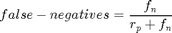
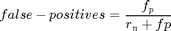
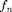
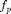
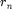
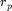

evaluate_FNFP
Based on the detection results "detection" and the trigger signal, we can calculate the false-positives and false-negatives. As some detection-methods may have a kind of delay, the user can specify the maximum delay of an detection result.
Contents
Evaluate False-Negatives False-Positives
This function determines the false-positive-rate as well as the false-negative rate by comparing the detection results('detection') with the correct results('trigger'). Both values are calculated by using the following equations:  $
- : number of false-negatives detections
- : number of false-positives detections
- : number of right-negatives detections
- : number of right-positives detections
Furthermore we have to considere some kind of detection delay, if specified by the user. This is taken into account during determining this values.
function [fn, fp] = evaluate_FNFP(trigger, detection, max_delay)
generate vector, where every 1 means: fault was injected, but not detected --> false-negative, every -1 means: fault was detected, but not injected --> false-positive
res = trigger - detection; %get size of vector st = size(res); s1 = st(1,1); s2 = st(1,2); if(s1 > s2) ind = s1; res = transpose(res); trigger = transpose(trigger); detection = transpose(detection); else ind = s2; end %go through vector in order to calculate fp/fn ind_1 = 0; pos_fn = 0; fn = 0; fp = 0; rp = 0; rn = 0;
Determine values of fn, fp, rn, rp
for i=1:ind if(res(i) == -1) %decide whether it is a false-positive or a delayed detection if(pos_fn == 0) fp = fp + 1; else %check for max_delay delay = i - ind_1; if(delay > max_delay) fp = fp + 1; else %detected fault with an acceptable delay --> can not be a %false-negative but is a right-positive, as we did not %count it when we recognized the 1 pos_fn = 0; rp = rp + 1; %furthermore we have a right-negative, as we would have a %zero here, when the failure was detected without the delay rn = rn + 1; end end end %count rn and rp if(res(i) == 0) if(trigger(i) == 0 && detection(i) == 0) rn = rn + 1; else rp = rp + 1; end end %faults were injected, but not detected immediatly if(res(i) == 1) ind_1 = i; pos_fn = 1; end %Check for false-negatives %pos_fn == 1 --> we injected a fault, but did not detected it until now if(res(i) == 0 && pos_fn == 1) %check if max_delay is exceeded delay = i - ind_1; if(delay > max_delay) %false-negative pos_fn = 0; fn = fn + 1; end end end
convert fn/fp to rates
fn = fn/(rp+fn); fp = fp/(rn+fp);
end